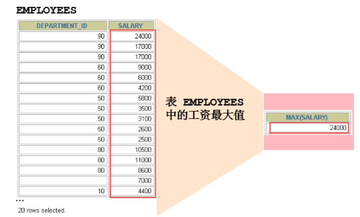
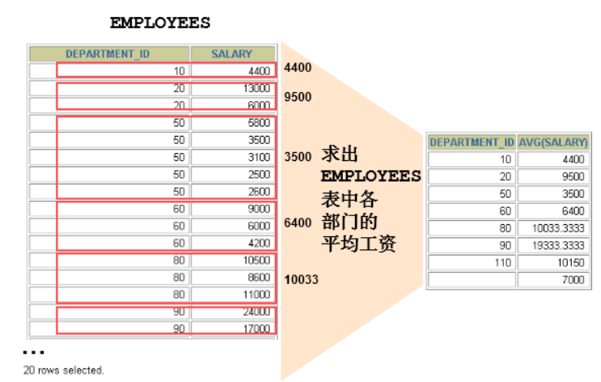
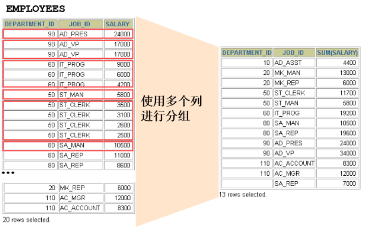
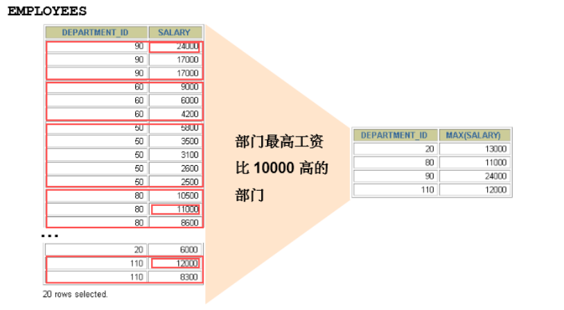

我们上一章讲到了 SQL 单行函数。实际上 SQL 函数还有一类，叫做聚合（或聚集、分组）函数，它是对 一组数据进行汇总的函数，输入的是一组数据的集合，输出的是单个值。
1. 聚合函数介绍
1.1 什么是聚合函数
聚合函数作用于一组数据，并对一组数据返回一个值。

1.2 AVG和SUM函数
可以对数值型数据使用AVG 和 SUM 函数。
SELECT AVG(salary), MAX(salary),MIN(salary), SUM(salary)
FROM employees
WHERE job_id LIKE '%REP%';
+-------------+-------------+-------------+-------------+
| AVG(salary) | MAX(salary) | MIN(salary) | SUM(salary) |
+-------------+-------------+-------------+-------------+
| 8272.727273 | 11500 | 6000 | 273000.00 |
+-------------+-------------+-------------+-------------+
1 row in set
1.3 MIN和MAX函数
可以对任意数据类型的数据使用 MIN 和 MAX 函数。
SELECT MIN(hire_date), MAX(hire_date)
FROM employees;
+----------------+----------------+
| MIN(hire_date) | MAX(hire_date) |
+----------------+----------------+
| 1987-06-17 | 2000-04-21 |
+----------------+----------------+
1 row in set
1.4 COUNT函数
COUNT(*)返回表中记录总数，适用于任意数据类型。
SELECT COUNT(*)
FROM employees
WHERE department_id = 50;
+----------+
| COUNT(*) |
+----------+
| 45 |
+----------+
1 row in set
- 问题：用count(*)，count(1)，count(列名)谁好呢?
其实，对于MyISAM引擎的表是没有区别的。这种引擎内部有一计数器在维护着行数。
Innodb引擎的表用count(*),count(1)直接读行数，复杂度是O(n)，因为innodb真的要去数一遍。但好于具体的count(列名)。
- 问题：能不能使用count(列名)替换count(*)?
不要使用 count(列名)来替代 count(*) ， count(*) 是 SQL92 定义的标准统计行数的语法，跟数据库无关，跟 NULL 和非 NULL 无关。 说明：count(*)会统计值为 NULL 的行，而 count(列名)不会统计此列为 NULL 值的行。
举例：计算平均奖金率
# 考虑空值的情况
SELECT SUM(commission_pct)/COUNT(IFNULL(commission_pct,1))
FROM employees;
2. GROUP BY
2.1 基本使用

可以使用GROUP BY子句将表中的数据分成若干组
SELECT column, group_function(column)
FROM table
[WHERE condition]
[GROUP BY group_by_expression]
[ORDER BY column];
明确：WHERE一定放在FROM后面
在SELECT列表中所有未包含在组函数中的列都应该包含在 GROUP BY子句中
SELECT department_id, AVG(salary)
FROM employees
GROUP BY department_id ;
+---------------+--------------+
| department_id | AVG(salary) |
+---------------+--------------+
| NULL | 7000.000000 |
| 10 | 4400.000000 |
| 20 | 9500.000000 |
| 30 | 4150.000000 |
| 40 | 6500.000000 |
| 50 | 3475.555556 |
| 60 | 5760.000000 |
| 70 | 10000.000000 |
| 80 | 8955.882353 |
| 90 | 19333.333333 |
| 100 | 8600.000000 |
| 110 | 10150.000000 |
+---------------+--------------+
12 rows in set
包含在 GROUP BY 子句中的列不必包含在SELECT 列表中
SELECT AVG(salary)
FROM employees
GROUP BY department_id ;
+--------------+
| AVG(salary) |
+--------------+
| 7000.000000 |
| 4400.000000 |
| 9500.000000 |
| 4150.000000 |
| 6500.000000 |
| 3475.555556 |
| 5760.000000 |
| 10000.000000 |
| 8955.882353 |
| 19333.333333 |
| 8600.000000 |
| 10150.000000 |
+--------------+
12 rows in set
2.2 使用多个列分组

SELECT department_id dept_id, job_id, SUM(salary)
FROM employees
GROUP BY department_id, job_id ;
+---------+------------+-------------+
| dept_id | job_id | SUM(salary) |
+---------+------------+-------------+
| 90 | AD_PRES | 24000.00 |
| 90 | AD_VP | 34000.00 |
| 60 | IT_PROG | 28800.00 |
| 100 | FI_MGR | 12000.00 |
| 100 | FI_ACCOUNT | 39600.00 |
| 30 | PU_MAN | 11000.00 |
| 30 | PU_CLERK | 13900.00 |
| 50 | ST_MAN | 36400.00 |
| 50 | ST_CLERK | 55700.00 |
| 80 | SA_MAN | 61000.00 |
| 80 | SA_REP | 243500.00 |
| NULL | SA_REP | 7000.00 |
| 50 | SH_CLERK | 64300.00 |
| 10 | AD_ASST | 4400.00 |
| 20 | MK_MAN | 13000.00 |
| 20 | MK_REP | 6000.00 |
| 40 | HR_REP | 6500.00 |
| 70 | PR_REP | 10000.00 |
| 110 | AC_MGR | 12000.00 |
| 110 | AC_ACCOUNT | 8300.00 |
+---------+------------+-------------+
20 rows in set
2.3 GROUP BY中使用WITH ROLLUP
使用 WITH ROLLUP 关键字之后，在所有查询出的分组记录之后增加一条记录，该记录计算查询出的所 有记录的总和，即统计记录数量。
SELECT department_id,AVG(salary)
FROM employees
WHERE department_id > 80
GROUP BY department_id WITH ROLLUP;
+---------------+--------------+
| department_id | AVG(salary) |
+---------------+--------------+
| 90 | 19333.333333 |
| 100 | 8600.000000 |
| 110 | 10150.000000 |
| NULL | 11809.090909 |
+---------------+--------------+
4 rows in set
注意： 当使用ROLLUP时，不能同时使用ORDER BY子句进行结果排序，即ROLLUP和ORDER BY是互相排斥 的。
3. HAVING
3.1 基本使用

过滤分组：HAVING子句
- 行已经被分组。
- 使用了聚合函数。
- 满足HAVING 子句中条件的分组将被显示。
- HAVING 不能单独使用，必须要跟 GROUP BY 一起使用。
mysql> SELECT department_id, MAX(salary)
FROM employees
GROUP BY department_id
HAVING MAX(salary)>10000 ;
+---------------+-------------+
| department_id | MAX(salary) |
+---------------+-------------+
| 20 | 13000 |
| 30 | 11000 |
| 80 | 14000 |
| 90 | 24000 |
| 100 | 12000 |
| 110 | 12000 |
+---------------+-------------+
6 rows in set
3.2 WHERE和HAVING的对比
区别1：
**WHERE 可以直接使用表中的字段作为筛选条件，但不能使用分组中的计算函数作为筛选条件； **
HAVING 必须要与 GROUP BY 配合使用，可以把分组计算的函数和分组字段作为筛选条件。
这决定了，在需要对数据进行分组统计的时候，HAVING 可以完成 WHERE 不能完成的任务。这是因为， 在查询语法结构中，WHERE 在 GROUP BY 之前，所以无法对分组结果进行筛选。HAVING 在 GROUP BY 之 后，可以使用分组字段和分组中的计算函数，对分组的结果集进行筛选，这个功能是 WHERE 无法完成 的。另外，WHERE排除的记录不再包括在分组中。
区别2：
**如果需要通过连接从关联表中获取需要的数据，WHERE 是先筛选后连接，而 HAVING 是先连接 后筛选。 **
这一点，就决定了在关联查询中，WHERE 比 HAVING 更高效。因为 WHERE 可以先筛选，用一 个筛选后的较小数据集和关联表进行连接，这样占用的资源比较少，执行效率也比较高。HAVING 则需要 先把结果集准备好，也就是用未被筛选的数据集进行关联，然后对这个大的数据集进行筛选，这样占用 的资源就比较多，执行效率也较低。
开发中的选择：
WHERE 和 HAVING 也不是互相排斥的，我们可以在一个查询里面同时使用 WHERE 和 HAVING。包含分组 统计函数的条件用 HAVING，普通条件用 WHERE。这样，我们就既利用了 WHERE 条件的高效快速，又发挥了 HAVING 可以使用包含分组统计函数的查询条件的优点。当数据量特别大的时候，运行效率会有很大的差别。4. SELECT的执行过程
4.1 查询的结构
#方式1：
SELECT ...,....,...
FROM ...,...,....
WHERE 多表的连接条件
AND 不包含组函数的过滤条件
GROUP BY ...,...
HAVING 包含组函数的过滤条件
ORDER BY ... ASC/DESC
LIMIT ...,...
#方式2：
SELECT ...,....,...
FROM ... JOIN ...
ON 多表的连接条件
JOIN ...
ON ...
WHERE 不包含组函数的过滤条件
AND/OR 不包含组函数的过滤条件
GROUP BY ...,...
HAVING 包含组函数的过滤条件
ORDER BY ... ASC/DESC
LIMIT ...,...
#其中：
#（1）from：从哪些表中筛选
#（2）on：关联多表查询时，去除笛卡尔积
#（3）where：从表中筛选的条件
#（4）group by：分组依据
#（5）having：在统计结果中再次筛选
#（6）order by：排序
#（7）limit：分页
4.2 SELECT执行顺序
你需要记住 SELECT 查询时的两个顺序：
1. 关键字的顺序是不能颠倒的
SELECT ... FROM ... WHERE ... GROUP BY ... HAVING ... ORDER BY ... LIMIT...
2.SELECT 语句的执行顺序（在 MySQL 和 Oracle 中，SELECT 执行顺序基本相同）：
FROM -> WHERE -> GROUP BY -> HAVING -> SELECT 的字段 -> DISTINCT -> ORDER BY -> LIMIT
比如你写了一个 SQL 语句，那么它的关键字顺序和执行顺序是下面这样的：
SELECT DISTINCT player_id, player_name, count(*) as num # 顺序 5
FROM player JOIN team ON player.team_id = team.team_id # 顺序 1
WHERE height > 1.80 # 顺序 2
GROUP BY player.team_id # 顺序 3
HAVING num > 2 # 顺序 4
ORDER BY num DESC # 顺序 6
LIMIT 2 # 顺序 7
在 SELECT 语句执行这些步骤的时候，每个步骤都会产生一个 虚拟表 ，然后将这个虚拟表传入下一个步骤中作为输入。需要注意的是，这些步骤隐含在 SQL 的执行过程中，对于我们来说是不可见的。
4.3 SQL 的执行原理
SELECT 是先执行 FROM 这一步的。在这个阶段，如果是多张表联查，还会经历下面的几个步骤：
- 首先先通过 CROSS JOIN 求笛卡尔积，相当于得到虚拟表 vt（virtual table）1-1；
- 通过 ON 进行筛选，在虚拟表
vt1-1的基础上进行筛选，得到虚拟表vt1-2； - 添加外部行。如果我们使用的是左连接、右链接或者全连接，就会涉及到外部行，也就是在虚拟 表
vt1-2的基础上增加外部行，得到虚拟表vt1-3。
当然如果我们操作的是两张以上的表，还会重复上面的步骤，直到所有表都被处理完为止。这个过程得 到是我们的原始数据。
当我们拿到了查询数据表的原始数据，也就是最终的虚拟表 vt1 ，就可以在此基础上再进行 WHERE 阶段 。在这个阶段中，会根据 vt1 表的结果进行筛选过滤，得到虚拟表 vt2 。
然后进入第三步和第四步，也就是 GROUP 和 HAVING 阶段 。在这个阶段中，实际上是在虚拟表 vt2 的 基础上进行分组和分组过滤，得到中间的虚拟表 vt3 和 vt4 。 当我们完成了条件筛选部分之后，就可以筛选表中提取的字段，也就是进入到 SELECT 和 DISTINCT 阶段 。
首先在 SELECT 阶段会提取想要的字段，然后在 DISTINCT 阶段过滤掉重复的行，分别得到中间的虚拟表 vt5-1 和 vt5-2 。 当我们提取了想要的字段数据之后，就可以按照指定的字段进行排序，也就是 ORDER BY 阶段 ，得到 虚拟表 vt6 。
最后在 vt6 的基础上，取出指定行的记录，也就是 LIMIT 阶段 ，得到最终的结果，对应的是虚拟表 vt7 。 当然我们在写 SELECT 语句的时候，不一定存在所有的关键字，相应的阶段就会省略。 同时因为 SQL 是一门类似英语的结构化查询语言，所以我们在写 SELECT 语句的时候，还要注意相应的 关键字顺序，所谓底层运行的原理，就是我们刚才讲到的执行顺序
5.课后练习
where字句可否使用组函数进行过滤?
No!查询公司员工的工资最大值、最小值、平均值和总和
SELECT MAX(salary) max_sal,MIN(salary) min_sal,AVG(salary) avg_sal,SUM(salary) sum_sal
FROM employees;
+---------+---------+-------------+-----------+
| max_sal | min_sal | avg_sal | sum_sal |
+---------+---------+-------------+-----------+
| 24000 | 2100 | 6461.682243 | 691400.00 |
+---------+---------+-------------+-----------+
1 row in set
- 查询各job_id的员工工资的最大值、最小值、平均值和总和
SELECT job_id,MAX(salary) max_sal,MIN(salary) min_sal,AVG(salary) avg_sal,SUM(salary) sum_sal
FROM employees
GROUP BY job_id;
+------------+---------+---------+--------------+-----------+
| job_id | max_sal | min_sal | avg_sal | sum_sal |
+------------+---------+---------+--------------+-----------+
| AC_ACCOUNT | 8300 | 8300 | 8300.000000 | 8300.00 |
| AC_MGR | 12000 | 12000 | 12000.000000 | 12000.00 |
| AD_ASST | 4400 | 4400 | 4400.000000 | 4400.00 |
| AD_PRES | 24000 | 24000 | 24000.000000 | 24000.00 |
| AD_VP | 17000 | 17000 | 17000.000000 | 34000.00 |
| FI_ACCOUNT | 9000 | 6900 | 7920.000000 | 39600.00 |
| FI_MGR | 12000 | 12000 | 12000.000000 | 12000.00 |
| HR_REP | 6500 | 6500 | 6500.000000 | 6500.00 |
| IT_PROG | 9000 | 4200 | 5760.000000 | 28800.00 |
| MK_MAN | 13000 | 13000 | 13000.000000 | 13000.00 |
| MK_REP | 6000 | 6000 | 6000.000000 | 6000.00 |
| PR_REP | 10000 | 10000 | 10000.000000 | 10000.00 |
| PU_CLERK | 3100 | 2500 | 2780.000000 | 13900.00 |
| PU_MAN | 11000 | 11000 | 11000.000000 | 11000.00 |
| SA_MAN | 14000 | 10500 | 12200.000000 | 61000.00 |
| SA_REP | 11500 | 6100 | 8350.000000 | 250500.00 |
| SH_CLERK | 4200 | 2500 | 3215.000000 | 64300.00 |
| ST_CLERK | 3600 | 2100 | 2785.000000 | 55700.00 |
| ST_MAN | 8200 | 5800 | 7280.000000 | 36400.00 |
+------------+---------+---------+--------------+-----------+
19 rows in set
- 选择各个job_id的员工人数
SELECT job_id,COUNT(*)
FROM employees
GROUP BY job_id;
+------------+----------+
| job_id | COUNT(*) |
+------------+----------+
| AC_ACCOUNT | 1 |
| AC_MGR | 1 |
| AD_ASST | 1 |
| AD_PRES | 1 |
| AD_VP | 2 |
| FI_ACCOUNT | 5 |
| FI_MGR | 1 |
| HR_REP | 1 |
| IT_PROG | 5 |
| MK_MAN | 1 |
| MK_REP | 1 |
| PR_REP | 1 |
| PU_CLERK | 5 |
| PU_MAN | 1 |
| SA_MAN | 5 |
| SA_REP | 30 |
| SH_CLERK | 20 |
| ST_CLERK | 20 |
| ST_MAN | 5 |
+------------+----------+
19 rows in set
- 查询员工最高工资和最低工资的差距（DIFFERENCE)
SELECT MAX(salary) - MIN(salary) "DIFFERENCE"
FROM employees;
+------------+
| DIFFERENCE |
+------------+
| 21900.00 |
+------------+
1 row in set
- 查询各个管理者手下员工的最低工资，其中最低工资不能低于6000，没有管理者的员工不计算在内
SELECT manager_id,MIN(salary)
FROM employees
WHERE manager_id IS NOT NULL
GROUP BY manager_id
HAVING MIN(salary) >= 6000;
+------------+-------------+
| manager_id | MIN(salary) |
+------------+-------------+
| 102 | 9000 |
| 108 | 6900 |
| 145 | 7000 |
| 146 | 7000 |
| 147 | 6200 |
| 148 | 6100 |
| 149 | 6200 |
| 201 | 6000 |
| 205 | 8300 |
+------------+-------------+
9 rows in set
- 查询所有部门的名字、location_id、部门数量和平均工资，并按平均工资降序
SELECT department_name,d.location_id,COUNT(employee_id),AVG(salary)
FROM departments d LEFT JOIN employees e
ON d.`department_id` = e.`department_id`
GROUP BY department_name,location_id
+----------------------+-------------+--------------------+--------------+
| department_name | location_id | COUNT(employee_id) | AVG(salary) |
+----------------------+-------------+--------------------+--------------+
| Administration | 1700 | 1 | 4400.000000 |
| Marketing | 1800 | 2 | 9500.000000 |
| Purchasing | 1700 | 6 | 4150.000000 |
| Human Resources | 2400 | 1 | 6500.000000 |
| Shipping | 1500 | 45 | 3475.555556 |
| IT | 1400 | 5 | 5760.000000 |
| Public Relations | 2700 | 1 | 10000.000000 |
| Sales | 2500 | 34 | 8955.882353 |
| Executive | 1700 | 3 | 19333.333333 |
| Finance | 1700 | 6 | 8600.000000 |
| Accounting | 1700 | 2 | 10150.000000 |
| Treasury | 1700 | 0 | NULL |
| Corporate Tax | 1700 | 0 | NULL |
| Control And Credit | 1700 | 0 | NULL |
| Shareholder Services | 1700 | 0 | NULL |
| Benefits | 1700 | 0 | NULL |
| Manufacturing | 1700 | 0 | NULL |
| Construction | 1700 | 0 | NULL |
| Contracting | 1700 | 0 | NULL |
| Operations | 1700 | 0 | NULL |
| IT Support | 1700 | 0 | NULL |
| NOC | 1700 | 0 | NULL |
| IT Helpdesk | 1700 | 0 | NULL |
| Government Sales | 1700 | 0 | NULL |
| Retail Sales | 1700 | 0 | NULL |
| Recruiting | 1700 | 0 | NULL |
| Payroll | 1700 | 0 | NULL |
+----------------------+-------------+--------------------+--------------+
27 rows in set
- 查询每个工种、每个部门的部门名，工种名和最低工资
SELECT d.department_name,e.job_id,MIN(salary)
FROM departments d LEFT JOIN employees e
ON d.`department_id` = e.`department_id`
GROUP BY job_id;
+------------------+------------+-------------+
| department_name | job_id | MIN(salary) |
+------------------+------------+-------------+
| Administration | AD_ASST | 4400 |
| Marketing | MK_MAN | 13000 |
| Marketing | MK_REP | 6000 |
| Purchasing | PU_MAN | 11000 |
| Purchasing | PU_CLERK | 2500 |
| Human Resources | HR_REP | 6500 |
| Shipping | ST_MAN | 5800 |
| Shipping | ST_CLERK | 2100 |
| Shipping | SH_CLERK | 2500 |
| IT | IT_PROG | 4200 |
| Public Relations | PR_REP | 10000 |
| Sales | SA_MAN | 10500 |
| Sales | SA_REP | 6100 |
| Executive | AD_PRES | 24000 |
| Executive | AD_VP | 17000 |
| Finance | FI_MGR | 12000 |
| Finance | FI_ACCOUNT | 6900 |
| Accounting | AC_MGR | 12000 |
| Accounting | AC_ACCOUNT | 8300 |
| Treasury | NULL | NULL |
+------------------+------------+-------------+
20 rows in set